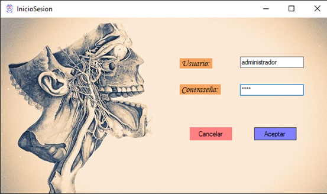
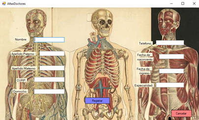
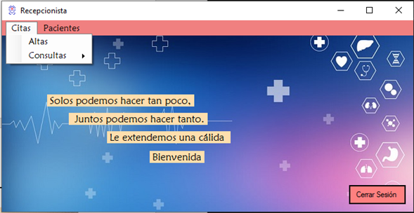
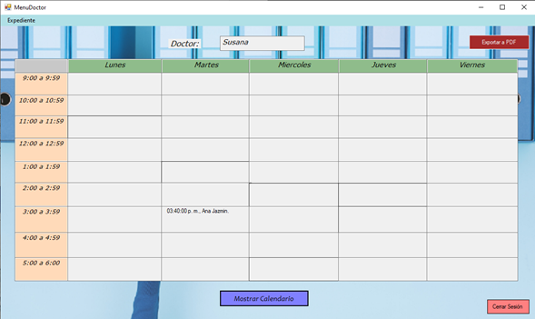

proyecto — dic 2022
Sistema de gestión hospitalaria desarrollado en C# y .NET: doctores, pacientes, citas clínicas, expedientes y reportes PDF con control de roles.
Sistema de gestión hospitalaria con módulos de administración de pacientes, doctores y recepcionistas. Incluye control de accesos por roles diferenciados, generación de reportes en PDF y consulta de expedientes clínicos.
Desarrollado con arquitectura en capas, separando la lógica de negocio, acceso a datos y presentación para facilitar el mantenimiento y la escalabilidad.




Se implementaron índices compuestos en la base de datos, reduciendo el tiempo de búsqueda de expedientes hasta un 70%.
Generación automática de reportes médicos con Crystal Reports, exportables en PDF con un solo clic.
Sistema de autenticación con tres niveles de acceso: Administrador, Doctor y Recepcionista, con permisos granulares.